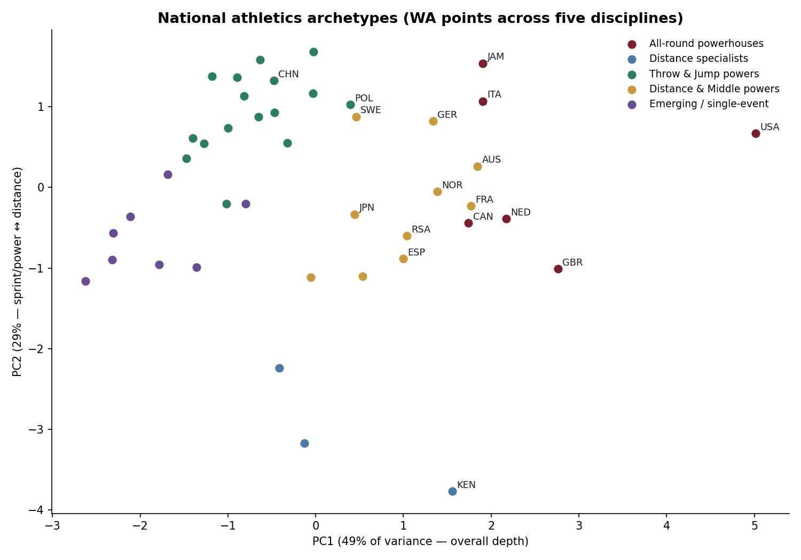
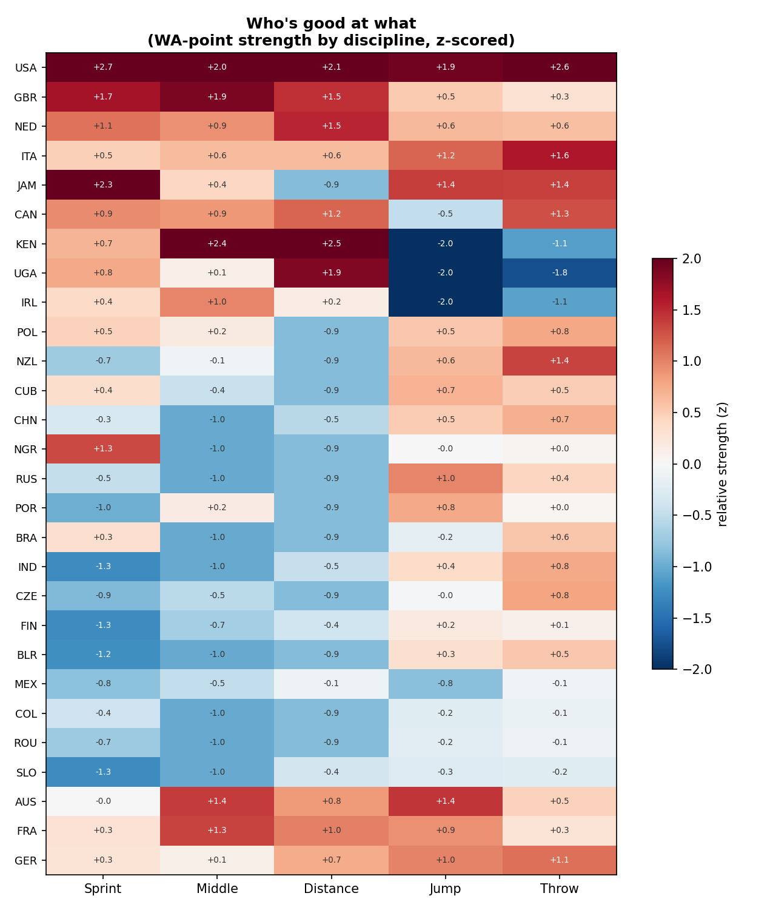

A medal count tells you a country won three golds. It doesn't tell you whether that country is a narrow specialist or a broad machine, or where its strength lives. World Athletics points do — they put every performance in every event on one scale. Using them as a currency of athletic capital across 6,400 top performances, the world sorts itself into five clean archetypes.
Five archetypes, drawn from the data
- All-round powerhouses — USA, GB, Netherlands, Italy, Jamaica, Canada. The USA towers: it sits a full principal-component beyond anyone on overall depth.
- Distance specialists — Kenya, Uganda: elite over 1500 m to the marathon, pointedly narrow elsewhere.
- Throw & jump powers — Poland, China, Cuba, Nigeria: capital banked in the field, not on the track.
- Distance & middle powers — Australia, France, Germany, Norway, Japan, Spain: broad programmes with an endurance tilt.
- Emerging / single-event nations — a Bahamas built on the 400 m, a Trinidad on the sprints.

Each cluster has a fingerprint
The throw-and-jump powers spike in the field and sag on the track; the distance specialists are the mirror image; the all-rounders are strong everywhere. It's the national character of a track programme, made legible.

Strength is a nation's mean top-5 WA score per discipline. Divide this absolute map by population or GDP and the overperformers — the Jamaicas and Norways punching above their size — light up; that per-capita layer sits directly on top of this one. Code & method on GitHub.